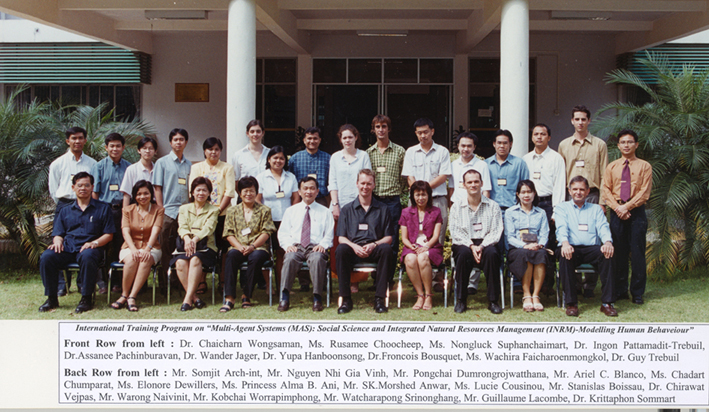

MAS and Social Psychology
31 March-4 April, Khon Kaen
Multi-Agent Systems (MAS),
Social Sciences and
Integrated Natural Resource Management (INRM)
Trainer
Dr. W.Jager , State University of Groningen
Report on the training is available

Organizers
- Dr. C. Wongsamun ( University of Khon Kaen, Faculty of Agriculture)
- F. Bousquet (CIRAD-IRRI)
Course Objectives
MAS and social psychology
Training
| Day | 8h30-10h | 10h30-12h | 13h30-15h | 15h30-17h |
| Monday 31 | Opening Ceremony | Overview: Human behaviour in social dilemmas: the non-economist of human behaviour | - Human needs and consumptive behaviour (based on Max-Neef) - Human decision making: an introduction in heuristics |
Group work |
|
Tuesday 1 |
- Modelling behaviour: optimisation v.s. psychological rules - The consumat approach, an introductory |
Group work | - Resource dilemma experiments - (Environmental psychology) - The Lakeland experiments (Ecological Economics) |
Group work |
| Wednesday 2 |
Environmental stability, population dynamics and
evolution of personality
|
Group work: Exercise with Cormas model | Free discussions | |
|
Thursday 3 |
Social interaction, market dynamics and innovation
diffusion - theory and practice
|
Group work: Exercise (2 products simulation from dissertation - lock in) | Market dynamics and innovation diffusion (Monte Veritas, Green consumption) | Group work |
| Friday 4 |
Prospects of further research using the consumat
approach
o Networks and consumption (Alessio Delre) o Demographic developments (collaboration?) |
Presentations - General discussion | Closing ceremony | |